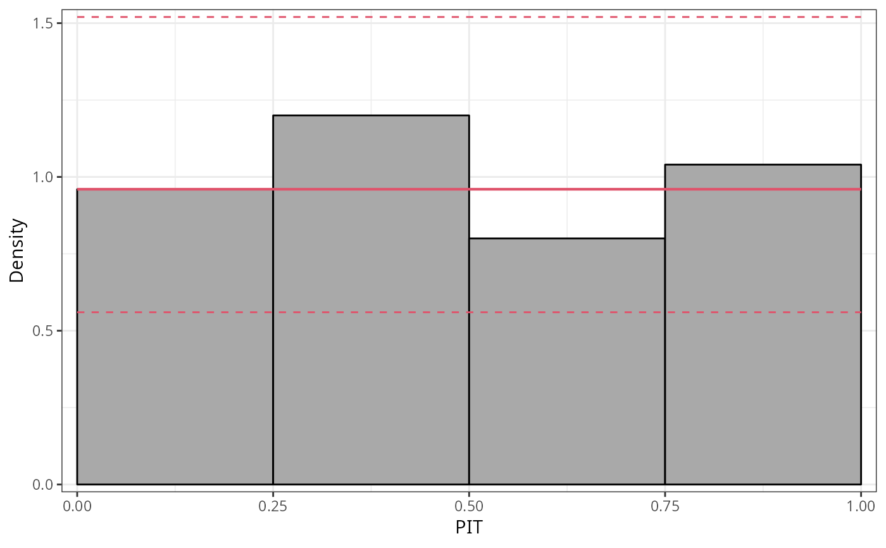
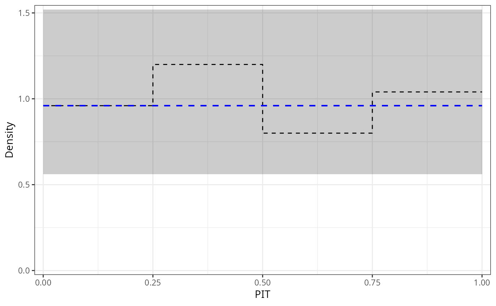
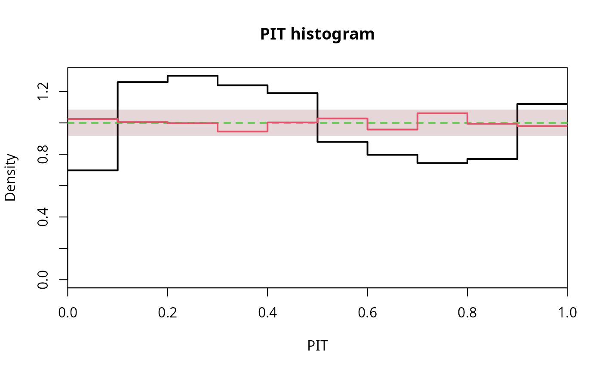

plot.pithist.RdGeneric plotting functions for PIT histograms of the class "pithist"
computed by link{pithist}.
# S3 method for pithist plot( x, single_graph = FALSE, style = NULL, freq = NULL, simint = NULL, confint = NULL, confint_level = 0.95, confint_type = c("exact", "approximation"), ref = NULL, xlim = c(NA, NA), ylim = c(0, NA), xlab = NULL, ylab = NULL, main = NULL, axes = TRUE, box = TRUE, col = "black", border = "black", lwd = NULL, lty = 1, alpha_min = 0.2, simint_col = "black", simint_lty = 1, simint_lwd = 1.75, confint_col = NULL, confint_lty = NULL, confint_lwd = 1.75, ref_col = NULL, ref_lty = NULL, ref_lwd = 1.75, ... ) # S3 method for pithist lines( x, freq = NULL, simint = FALSE, confint = FALSE, confint_level = 0.95, confint_type = c("exact", "approximation"), ref = FALSE, col = "black", lwd = 2, lty = 1, simint_col = "black", simint_lty = 1, simint_lwd = 1.75, confint_col = "black", confint_lty = 1, confint_lwd = 1.75, ref_col = "black", ref_lty = 2, ref_lwd = 1.75, ... ) # S3 method for pithist autoplot( object, single_graph = FALSE, style = NULL, freq = NULL, simint = NULL, confint = NULL, confint_level = 0.95, confint_type = c("exact", "approximation"), ref = NULL, xlim = c(NA, NA), ylim = c(0, NA), xlab = NULL, ylab = NULL, main = NULL, legend = FALSE, theme = NULL, colour = NULL, fill = NULL, size = NULL, linetype = NULL, alpha = NULL, simint_colour = "black", simint_size = 0.5, simint_linetype = 1, simint_alpha = NA, confint_colour = NULL, confint_fill = NULL, confint_size = 0.5, confint_linetype = NULL, confint_alpha = NA, ref_colour = NULL, ref_size = 0.75, ref_linetype = NULL, ref_alpha = NA, ... )
| single_graph | logical. Should all computed extended reliability
diagrams be plotted in a single graph? If yes, |
|---|---|
| style | character specifying the style of pithist. For |
| freq | logical. If |
| simint | logical. In case of discrete distributions, should the simulation (confidence) interval due to the randomization be visualized? |
| confint | Should confident intervals be drawn? Either logical or as character string defining one of `"polygon"`, `"line"` or `"none"`. |
| confint_level | numeric. The confidence level required. |
| confint_type | character. Which type of confidence interval should be plotted: `"exact"` or `"approximation"`. According to Agresti and Coull (1998), for interval estimation of binomial proportions an approximation can be better than exact. |
| ref | logical. Should a reference line be plotted? |
| xlim, ylim, xlab, ylab, main, axes, box | graphical parameters. |
| col, border, lwd, lty, alpha_min | graphical parameters for the main part of the base plot. |
| simint_col, simint_lty, simint_lwd, confint_col, confint_lty, confint_lwd, ref_col, ref_lty, ref_lwd | Further graphical parameters for the `confint` and `simint` line/polygon in the base plot. |
| ... | further graphical parameters passed to the plotting function. |
| object, x | an object of class |
| legend | logical. Should a legend be added in the |
| theme | Which `ggplot2` theme should be used. If not set, |
| colour, fill, size, linetype, alpha | graphical parameters for the histogram style part in the |
| simint_colour, simint_size, simint_linetype, simint_alpha, confint_colour, confint_fill, confint_size, confint_linetype, confint_alpha, ref_colour, ref_size, ref_linetype, ref_alpha | Further graphical parameters for the `confint` and `simint` line/polygon using |
PIT histograms graphically evaluate the probability integral transform (PIT), i.e., the value that the predictive CDF attains at the observation, with a uniform distribution. For a well calibrated model fit, the observation will be drawn from the predictive distribution and the PIT will have a standard uniform distribution.
PIT histograms can be rendered as ggplot2 or base R graphics by using
the generics autoplot or plot.
For a single base R graphically panel, lines adds an additional PIT histogram.
Agresti A, Coull AB (1998). “Approximate is Better than ``Exact'' for Interval Estimation of Binomial Proportions.” The American Statistician, 52(2), 119--126. doi: 10.1080/00031305.1998.10480550
Czado C, Gneiting T, Held L (2009). “Predictive Model Assessment for Count Data.” Biometrics, 65(4), 1254--1261. doi: 10.2307/2981683
Dawid AP (1984). “Present Position and Potential Developments: Some Personal Views: Statistical Theory: The Prequential Approach”, Journal of the Royal Statistical Society: Series A (General), 147(2), 278--292. doi: 10.2307/2981683
Diebold FX, Gunther TA, Tay AS (1998). “Evaluating Density Forecasts with Applications to Financial Risk Management”. International Economic Review, 39(4), 863--883. doi: 10.2307/2527342
Gneiting T, Balabdaoui F, Raftery AE (2007). “Probabilistic Forecasts, Calibration and Sharpness”. Journal of the Royal Statistical Society: Series B (Methodological). 69(2), 243--268. doi: 10.1111/j.1467-9868.2007.00587.x
## speed and stopping distances of cars m1_lm <- lm(dist ~ speed, data = cars) ## compute and plot pithist pithist(m1_lm)## add separate model if (require("crch", quietly = TRUE)) { m1_crch <- crch(dist ~ speed | speed, data = cars) #lines(pithist(m1_crch, plot = FALSE), col = 2, lty = 2, confint_col = 2) #FIXME } #------------------------------------------------------------------------------- if (require("crch")) { ## precipitation observations and forecasts for Innsbruck data("RainIbk", package = "crch") RainIbk <- sqrt(RainIbk) RainIbk$ensmean <- apply(RainIbk[, grep("^rainfc", names(RainIbk))], 1, mean) RainIbk$enssd <- apply(RainIbk[, grep("^rainfc", names(RainIbk))], 1, sd) RainIbk <- subset(RainIbk, enssd > 0) ## linear model w/ constant variance estimation m2_lm <- lm(rain ~ ensmean, data = RainIbk) ## logistic censored model m2_crch <- crch(rain ~ ensmean | log(enssd), data = RainIbk, left = 0, dist = "logistic") ## compute pithists pit2_lm <- pithist(m2_lm, plot = FALSE) pit2_crch <- pithist(m2_crch, plot = FALSE) ## plot in single graph with style "line" plot(c(pit2_lm, pit2_crch), col = c(1, 2), confint_col = c(1, 2), ref_col = 3, style = "line", single_graph = TRUE ) }#------------------------------------------------------------------------------- ## determinants for male satellites to nesting horseshoe crabs data("CrabSatellites", package = "countreg") ## linear poisson model m3_pois <- glm(satellites ~ width + color, data = CrabSatellites, family = poisson) ## compute and plot pithist as "ggplot2" graphic pithist(m3_pois, plot = "ggplot2")